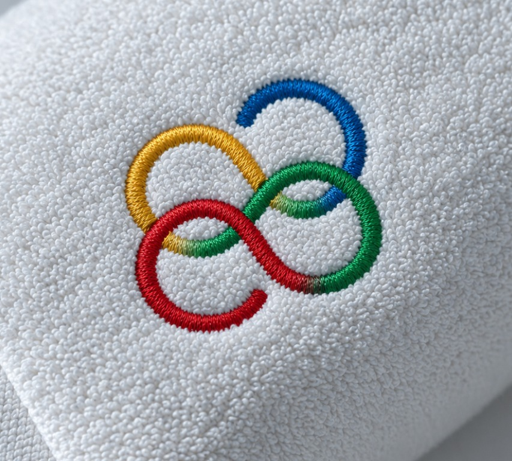
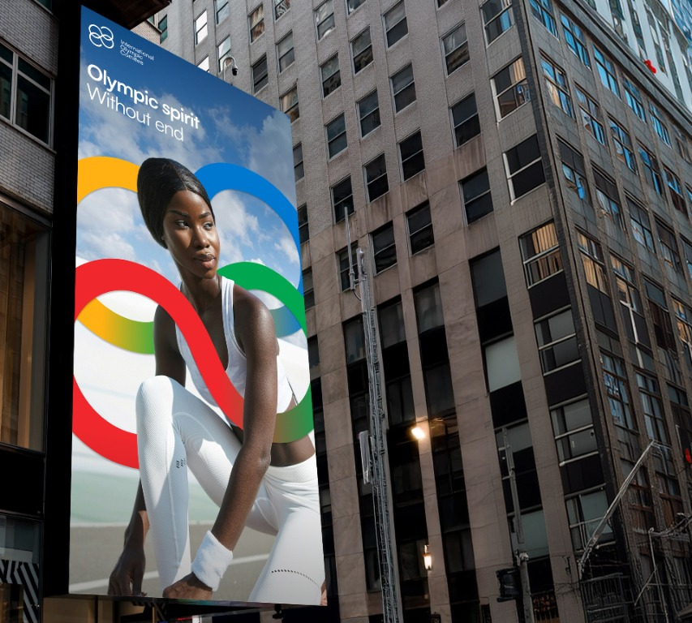
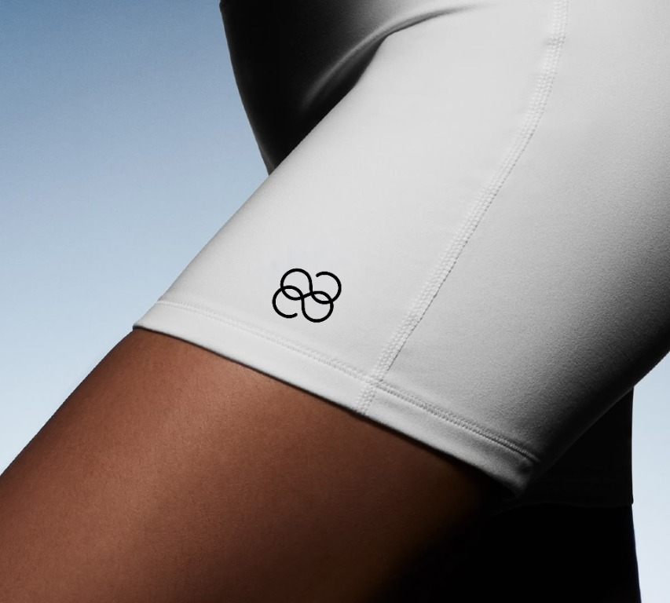

Info
Olympics reimagines the Olympic visual language through four symbols inspired by the elements of fire, air, water and earth. Replacing the iconic rings, each symbol represents qualities associated with athletes, from passion and agility to adaptability and strength. The system comes to life across broadcast graphics, scoreboards, social media and merchandise, creating a bold and contemporary visual universe.


